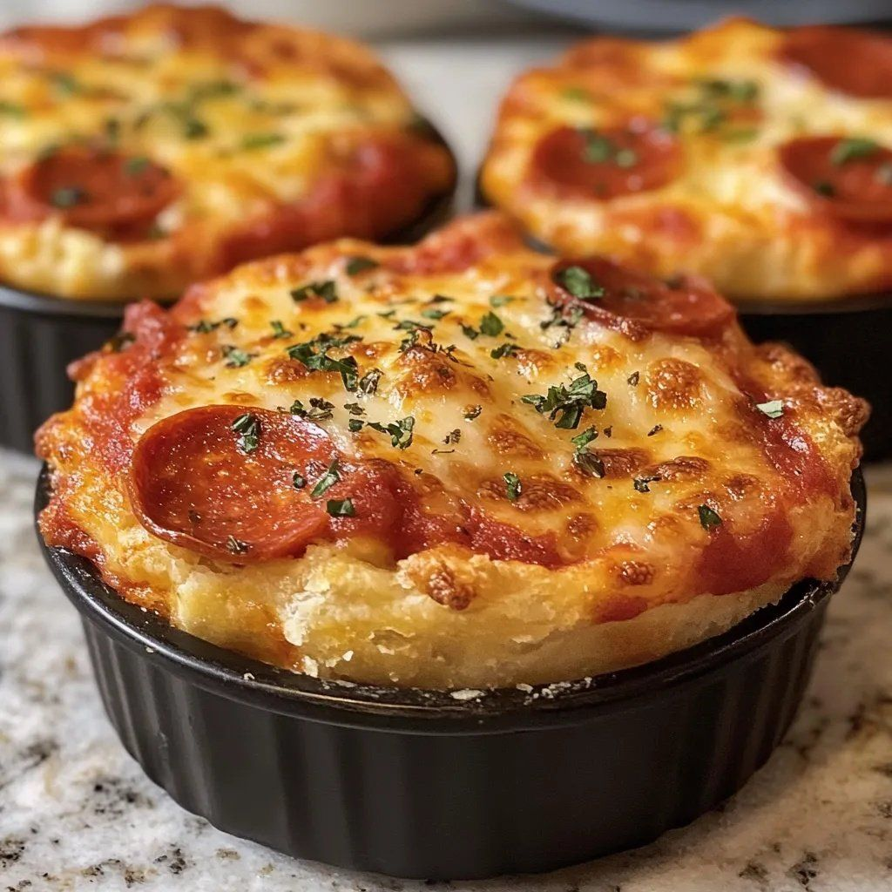

Pizza Pot Pies

- Meal
- Dinner
- Serves
- 6 (scaled ×1.5 from the source's 4 individual pot pies)
- Protein
- Italian sausage, pepperoni
- Cook
- stovetop + oven, 6 ramekins · ~25 min active / ~55 min total · moderate
- Make-ahead / leftovers
- filling yes (assemble with dough just before baking) / yes (reheat at 350°F)
- Mediterranean
- no
- WW tier
- heavy
- Status
- Trying out (probation)
Individual pizza pot pies: pizza sauce, mozzarella, Parmesan, sausage, pepperoni, mushrooms, pepper, onion and olives in ramekins, capped with a pizza-dough lid brushed with olive oil and Parmesan and baked until puffed and golden. Not Meatlovers Pizza Casserole (pasta in a 9×13, ground beef).
Ingredients
Scaled ×1.5 for 6. Source amounts (4 pot pies) in [brackets]. ≈ marks a rounding.
Pizza filling
- 3 cups pizza sauce [2 cups]
- 3 cups shredded low-moisture mozzarella [2 cups]
- ¾ cup shredded Parmesan [½ cup]
- 6 ounces sliced pepperoni [4 ounces]
- ¾ pound Italian sausage, cooked and crumbled [½ pound]
- ¾ cup sliced mushrooms [½ cup]
- ¾ cup diced green bell pepper [½ cup]
- ¾ cup diced onion [½ cup]
- 6 tablespoons sliced black olives (optional) [¼ cup]
Seasonings
- 1½ teaspoons Italian seasoning [1 teaspoon]
- ¾ teaspoon garlic powder [½ teaspoon]
- ≈⅓ teaspoon crushed red pepper flakes, optional (⅜ tsp exact) [¼ teaspoon] — kids: leave off and pass at the table
Crust
- 1½ pounds refrigerated pizza dough [1 pound]
- 1½ tablespoons olive oil [1 tablespoon]
- 3 tablespoons grated Parmesan [2 tablespoons]
- ¾ teaspoon Italian seasoning [½ teaspoon]
Optional garnishes: fresh basil, chopped parsley, extra Parmesan, crushed red pepper, warm pizza sauce for dipping.
Equipment: 6 oven-safe ramekins (about 10–12 oz each), a large rimmed baking sheet, a skillet.
Method
Source method (LiLi Cooks), for 6 ramekins.
- Preheat the oven to 400°F. Set 6 oven-safe ramekins on a large baking sheet.
- Brown the Italian sausage in a skillet over medium, breaking it into crumbles. Drain the fat very well.
- In the same skillet, sauté the mushrooms, bell pepper and onion 3–5 minutes to drive off moisture.
- Lightly grease the inside and rim of each ramekin.
- Spoon about ⅓–½ cup pizza sauce into each ramekin.
- Add a generous layer of mozzarella and a sprinkle of Parmesan to each.
- Divide the pepperoni, sausage, mushrooms, pepper, onion and olives among the ramekins.
- Sprinkle each lightly with Italian seasoning, garlic powder and red pepper flakes if using.
- Top each with another layer of mozzarella.
- Divide the dough into 6 pieces and stretch each a little larger than the ramekin top.
- Drape one over each ramekin, pressing it onto the rim with a slight overhang.
- Cut 1–2 small slits in each top to vent steam.
- Brush the dough with olive oil and sprinkle with Parmesan and Italian seasoning.
- Bake 18–25 minutes, until the crust is golden and puffed and the filling bubbles.
- Rest 5–10 minutes (the filling is very hot), then serve in the ramekins.
Notes
- Servings: source makes 4 individual pot pies; scaled ×1.5 to 6 (one each). Only rounding: red pepper flakes (⅜ tsp → ≈⅓ tsp).
- Processed meat: Italian sausage + pepperoni. Counts toward the ≤2 red/processed-meat cap.
- WW tier heavy: cheese-heavy (3 cups mozzarella + Parmesan), processed meats, refined pizza-dough crust.
- Mediterranean ✗: processed meat, refined crust, cheese-heavy (vegetables only; 1 of 4).
- Tomato: baked pizza sauce counts toward the weekly cooked-tomato target.
- Legumes / fish: none.
- a fish-free plate / hidden fish: no fish or shellfish in the recipe, so no swap needed. Check the Italian sausage and pizza sauce labels for anchovy/Worcestershire if a brand is unfamiliar.
- Source tips: cook watery vegetables first and drain the sausage well; use low-moisture mozzarella; don't overfill the ramekins. Ground chicken/turkey can replace the sausage (lighter, and drops one processed meat).
- Nutrition (as stated by the source, per pot pie): 430 calories, 25 g fat, 38 g carbohydrates, 20 g protein. Scaling to 6 keeps the per-pot-pie numbers the same.
Source: What's Cooking? (@WhatsCookings), via X: https://x.com/WhatsCookings/status/2116183882789761027 · full recipe linked in the author's reply (https://x.com/WhatsCookings/status/2116183885994148096): LiLi Cooks, "Pizza Pot Pies Cheesy Comfort" by Lili Clark, https://lilicooks.com/recipes/pizza-pot-pies-cheesy-comfort